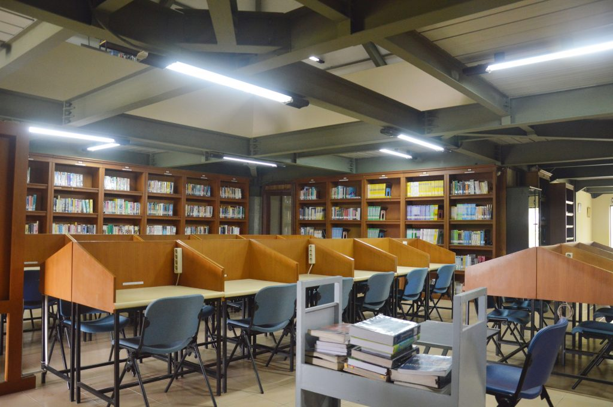
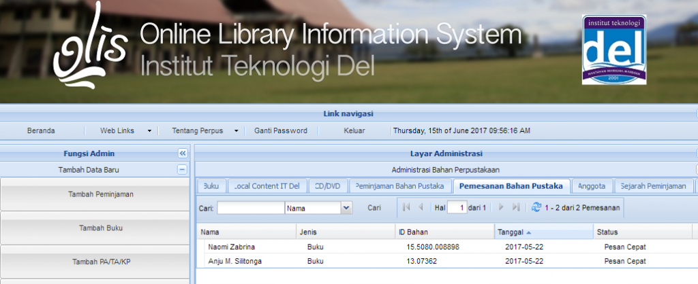

Perpustakaan Politeknik Informatika Del (PI Del) berdiri sejak tanggal 9 Januari 2002 dengan sistem pelayanan open acces (terbuka). Selanjutnya berubah nama seiring dengan berubahnya status Politeknik menjadi Institut sejak tahun 2013. Perpustakaan berganti nama menjadi Perpustakaan Institut Teknologi Del. Perpustakaan Institut Teknologi Del memiliki fungsi utama yaitu fungsi pendidikan. Pengadaan koleksi dan pengembangan minat baca internal dan eksternal Institut Teknologi Del dilakukan sebagai bagian dari kegiatan diseminasi kegiatan peningkatan minat baca.
Perpustakaan IT Del memiliki visi yaitu “Sebagai pusat informasi terkemuka yang menyediakan layanan informasi cetak maupun cetak dan juga penyedia layanan informasi berteknologi tinggi. Untuk mencapai visi dimaksud, misi yang diemban oleh Perpustakaan IT Del adalah sebagai berikut:
1. Menyediakan layanan pustaka yang mendukung program-program akademik dan non akademik.
2. Memberikan layanan informasi cetak maupun non cetak bagi seluruh civitas akademika PI Del maupun kepada masyarakat umum.
3. Meningkatkan cara dan proses diseminasi koleksi lebih efisien dan efektif.
4. Meningkatkan keragaman koleksi demi peningkatan mutu layanan
Pada awal berdiri, perpustakaan IT Del menempati 1 ruangan yang berada di Lt. 2 Gedung administrasi dan Ruangan direktur IT Del. Namun demikian perpustakaan banyak dikunjungi oleh mahasiswa/i yang saat itu masih sekitar 60 mahasiswa/i angkatan I PI-Del. Sangat membanggakan dengan jumlah hanya 138 buku dan baru berdiri setelah 3 bulan penerimaan mahasiwa/i baru, hal ini yang menyebabkan perpustakaan menjadi tempat yang ramai dikunjungi.
Pada tahun 2003 gedung perpustakaan yang baru telah selesai dibangun, letaknya berada di samping gedung auditorium. Gedung baru terdiri dari 2 lantai, 2 unit ruang diskusi, 1 unit ruang referensi, 1 unit ruang baca tenang, unit ruang pengolahan buku dan 1 unit ruang kepala perpustakaan.
Perpustakaan IT Del mendapat dukungan yang sangat baik dari Yayasan Del dan juga pimpinan di IT Del. Oleh sebab itu pada tahun 2012 koleksi buku mencapai 3936 judul dan 7347 eksemplar. Selain buku, di perpustakaan IT Del disediakan koleksi pustaka periodical yang uptodate seperti: reader's digest, national geographic, the economist, Koran kompas, Koran SIB, The Jakarta Pos, Tabloid Bola, Harian Analisa, Majalah Tempo, CHIP, INfokomputer, Infolinux, Weekender dan berbagai koleksi lain diantaranya jurnal dan prosiding. Koleksi unggulan IT Del adalah koleksi buku-buku bidang Teknologi Informasi terkini dan uptodate. Koleksi dimaksud diperoleh dari toko buku online yang tepercaya dan memasarkan buku-buku terbaru, bahkan buku yang belum terbit dapat dipesan. Selain buku-buku IT terkini, di perpustakaan juga disediakan buku-buku non IT terkini yang berguna untuk pemerkayaan pengetahuan, personal improvement, dan buku-buku yang sifatnya buku hiburan.
Layanan yang diberikan di perpustakaaan IT Del bukan hanya untuk kalangan tertentu saja. Layanan transaksi bahan pustaka dapat diperoleh oleh segenap staf dan karyawan yang berada di bawah naungan Yayasan Del. Selain staf dan karyawan, keluarga staf dan karyawan juga dapat memperoleh layanan di Perpustakaan IT Del.
Perpustakaan juga dilengkapi dengan koleksi CD/DVD untuk membantu mahasiswa belajar program-program komputer dan juga Bahasa Inggris melalui CD/DVD, terutama untuk belajar-sendiri. Penyediaan sumber perpustakan ini ditujukan untuk membantu mahasiswa meningkatkan kemampuan dalam pemrograman dan menggunakan Bahasa Inggris.
Sesuai dengan perkembangan informasi, maka perpustakaan IT Del memiliki sistem informasi yang disebut dengan sistem informasi perpustakaan IT Del (SIPP). Sistem informasi senantiasa uptodate dengan bantuan tim PSDI IT Del. Sistem informasi dimaksud dapat diakses melalui HP Android.
Berikut ini garis-garis besar tata tertib di Perpustakaan IT Del, yaitu:
Anggota perpustakaan IT Del terdiri dari:
1. Mahasiswa IT Del
2. Dosen dan Staf IT Del
3. Karyawan Del
4. Keluarga Dosen, Staf, dan Karyawan Del
A. Waktu operasional perpustakaan
- Senin-Jumat: 08:00-21:45 WIB
- Sabtu: 08:00-12:00 WIB
B. Kunjungan
1. Untuk alasan keamanan, pengunjung tidak diperbolehkan membawa tas, folder atau jaket ke dalam perpustakaan. Barang-barang tersebut harus disimpan dalam loker yang disediakan. Setiap kerusakan atau kehilangan barang-barang pribadi menjadi risiko pemiliknya.
2. Perpustakaan IT Del pada dasarnya adalah tempat untuk belajar. Untuk alasan ini, semua pengunjung harus tetap tenang sepanjang waktu di dalam perpustakaan dan menghormati orang lain yang sedang belajar. Selain itu, perpustakaan harus tetap dijaga kebersihan dan kerapiannya oleh semua pengunjungnya.
C. Aturan meminjam buku dari perpustakaan
1. Prosedur:
a. Anggota harus membawa dan memberikan kartu keanggotaan mereka kepada petugas perpustakaan saat akan melakukan transaksi peminjaman buku. Kartu anggota akan dikembalikan sesaat setelah proses transaksi selesai dilakukan.
b. Setelah seseorang diberikan hak meminjam buku, maka setiap kerusakan atau kehilangan buku akan menjadi tanggungjawab si peminjam. Peminjam akan dikenai denda apabila mengembalikan buku melewati tanggal pengembalian yang seharusnya.
c.Sistem informasi akan me-reminder peminjam sehari sebelum tanggal pengembalian buku.
2. Jumlah buku yang dapat dipinjam:
a. Untuk mahasiswa tingkat 1 dan 2 : maksimal 4 buku
b. Mahasiswa tingkat III, mahasiswa yang sedang mengerjakan Tugas Akhir dan staf : maksimal 5 buku.
c. Peminjaman buku oleh dosen, maksimal 7 buku.
3. Jangka waktu peminjaman:
a. Mahasiswa : 7 hari. Jika tidak ada reservasi untuk buku yang dipinjam, maka si peminjam dapat memperpanjang pinjaman untuk 7 hari berikutnya
b. Dosen dan Staf:14 hari. Dengan perpanjangan peminjaman untuk 14 hari selanjutnya
c. Untuk buku referensi utama (Bahasa Inggris), masa peminjaman oleh mahasiswa dan dosen bidang bahasa inggris adalah 1 semester.
d. Untuk referensi utama bidang IT, hanya dosen IT (sesuai bidang mata kuliah yang diajarkannya) dapat meminjam buku selama 1 semester.
4. Bahan yang tidak dapat dibawa keluar dari perpustakaan: Buku-buku yang diperlukan untuk Proyek Akhir, Tugas Akhir, Laporan Kerja Praktek, majalah, jurnal, kamus, ensiklopedi dan peta tidak dapat dibawa keluar dari perpustakaan. Bahan-bahan pustaka ini tidak dapat dibawa keluar dari perpustakaan kapanpun, namun dapat dipergunakan di dalam perpustakaan atau untuk dicopy.
5. Pengunjung diluar IT Del tidak diizinkan untuk meminjam buku dengan kondisi apapun. Namun, mereka dapat menggunakan buku-buku di dalam perpustakaan dan menggunakan komputer untuk mengakses internet di perpustakaan apabila tidak diperlukan oleh civitas IT Del.
6. Semua buku yang telah dibawa keluar dari perpustakaan harus dikembalikan sebelum masa libur, selama masa libur, buku-buku tidak dapat dipinjam dari perpustakaan.
1. Story telling untuk keluarga staf/karyawan IT Del
2. Story telling ini dijadwalkan dilakukan 2 kali dalam seminggu.
3. Ceramah minat baca untuk sekolah di sekitar IT Del
4. Perpusling
Perpustakaan IT Del menyediakan fasilitas berupa sistem informasi tugas akhir yang bisa diakses online. Dengan demikian mahasiswa tidak harus datang ke perpustakaan bila membutuhkan informasi mengenai tugas akhir. Selain itu, disediakan juga perpustakaan digital sehingga mahasiswa dapat mengakses koleksi e-book melalui aplikasi perpustakaan digital yang bisa diakses dengan menggunakan versi windows dan Android.
- Layanan Transaksi Buku
- Layanan Referensi
- Layanan Jurnal
- Layanan Cetak Dokumen
- Layanan Scan Dokumen
- Transaksi e-banking (BRI).
- Layanan Bebas Pustaka dan Berita Acara Serah terima karya Ilmiah
- Layanan Pengecekan Plagiarisme dengan Software Turnitin
Perpustakaaan Terbaik 1 (pertama) se-Sumut tahun 2012
Pustakawan Terbaik 1 (pertama) se-Sumut tahun 2012
Perpustakaan Terbaik ke 2 (kedua) se-Sumut tahun 2017
Pustakawan Terbaik ke 3 (tiga) se-Sumut tahun 2017
Perpustakaan Terbaik 1 (pertama) se-sumut tahun 2019